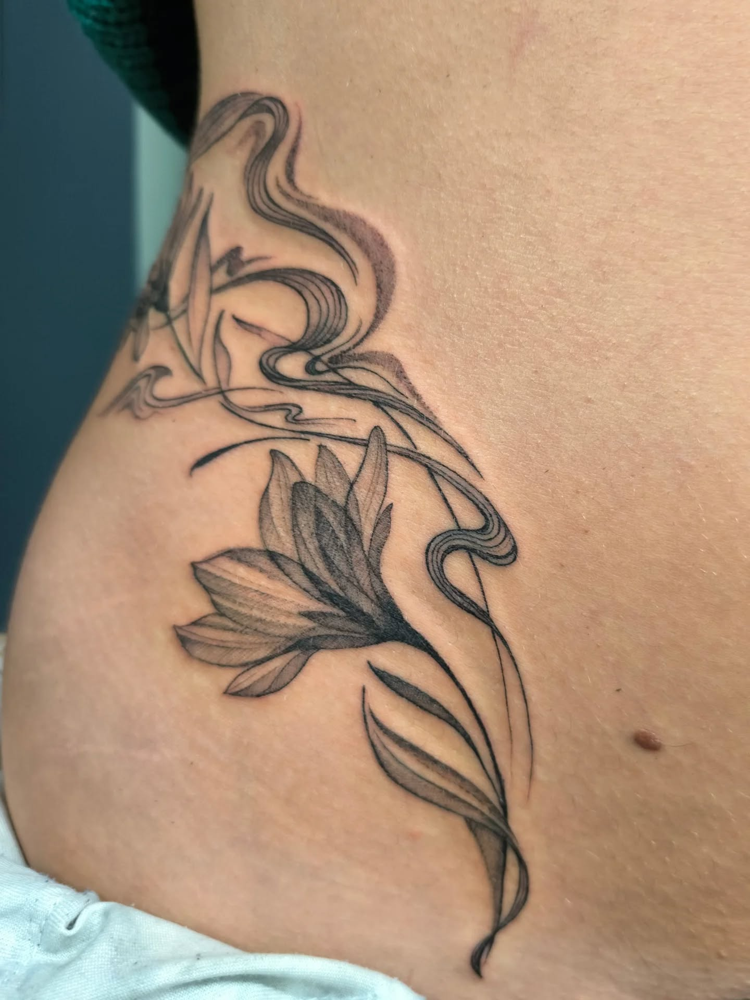
PL. I · Pièce signature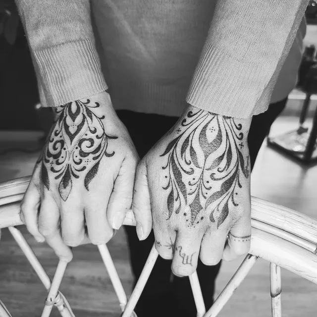
L'atelier · Saint-DiéL'Atelier
Aux Deux Aiguilles, chaque pièce naît d'une rencontre, d'un dessin patiemment retravaillé et d'un geste maîtrisé. Tatouages fine line, floral, géométrique, lettrage — chaque projet est unique, pensé sur mesure pour votre peau.
Tarifs indicatifs · Devis personnalisé selon la pièce, la taille et l'emplacement.
Planches récentes
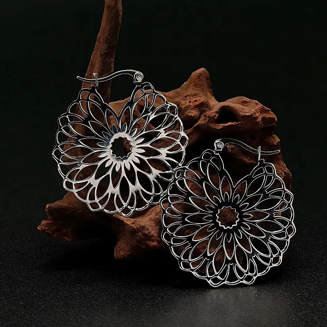
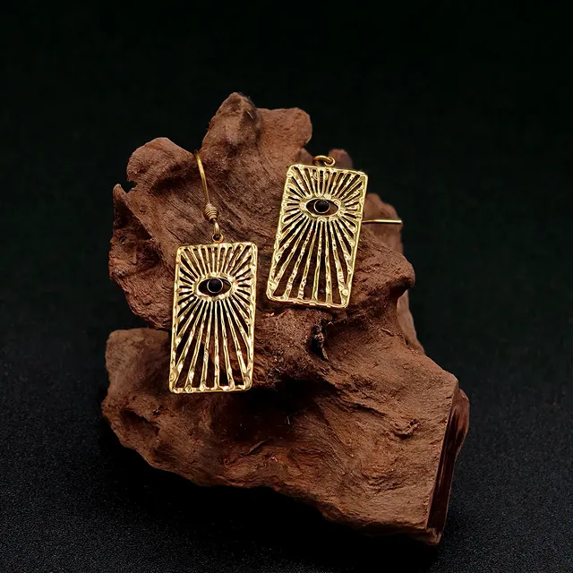
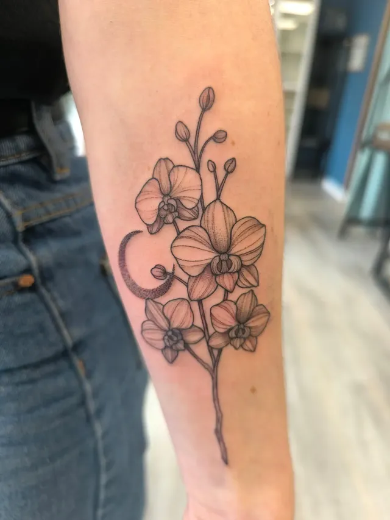
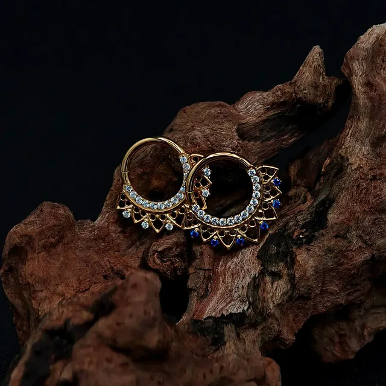
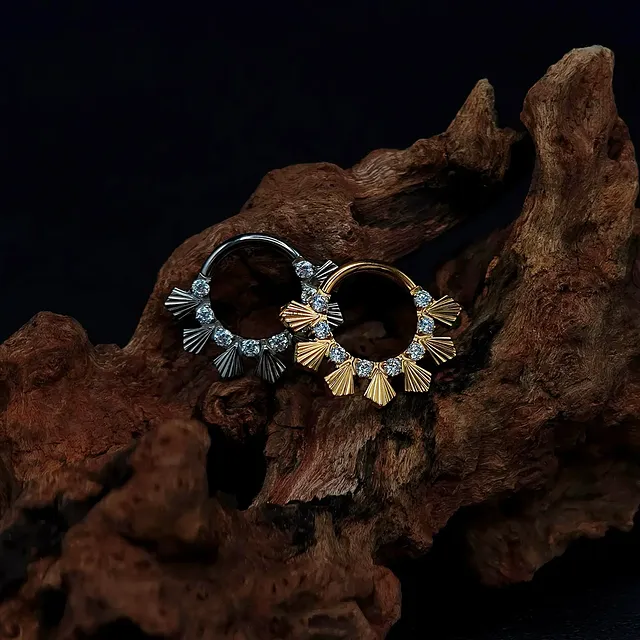
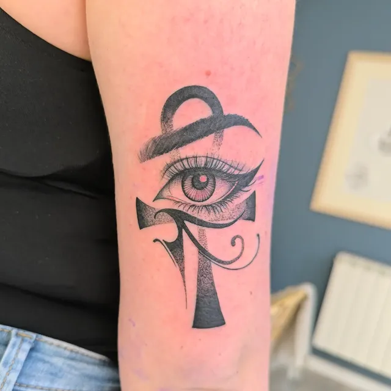
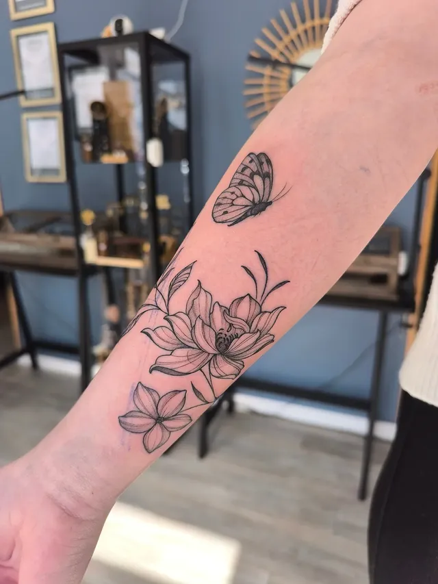
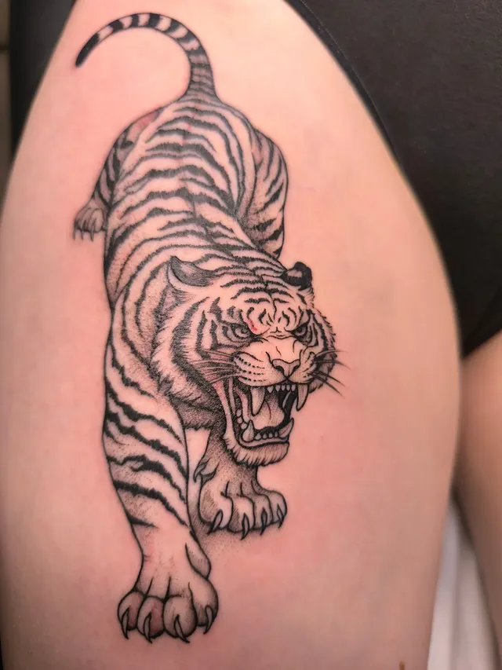
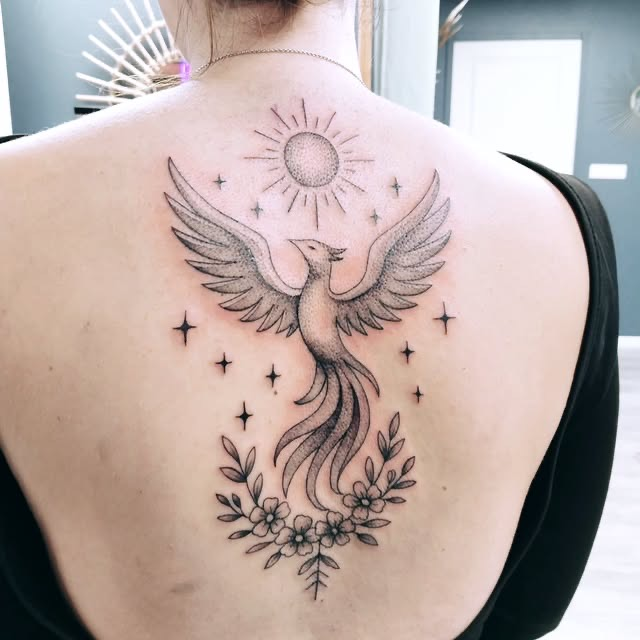
Soins post-séance
Un tatouage est une plaie à part entière. Sa beauté finale dépend des soins des premières semaines.
Conservez le pansement protecteur 2 à 3 heures. Lavez-vous les mains avant tout contact. Première douche autorisée le soir, à l'eau tiède, sans frotter.
Lavez le tatouage 2 fois par jour avec un savon doux pH neutre. Séchez en tamponnant. Appliquez une fine couche de crème cicatrisante (Bepanthen, Cicalfate). Pas de bain, pas de piscine, pas de mer.
Le tatouage va peler — c'est normal, ne grattez jamais. Continuez à hydrater 2 à 3 fois par jour. Les couleurs paraîtront ternes, elles reviendront.
Cicatrisation complète vers 1 mois. Protégez du soleil pendant 2 mois minimum (SPF 50+ ensuite, à vie). Hydratez régulièrement pour préserver l'éclat de la pièce.
En cas de doute, de rougeur excessive ou d'inconfort prolongé, contactez-nous au 07 59 66 96 91.